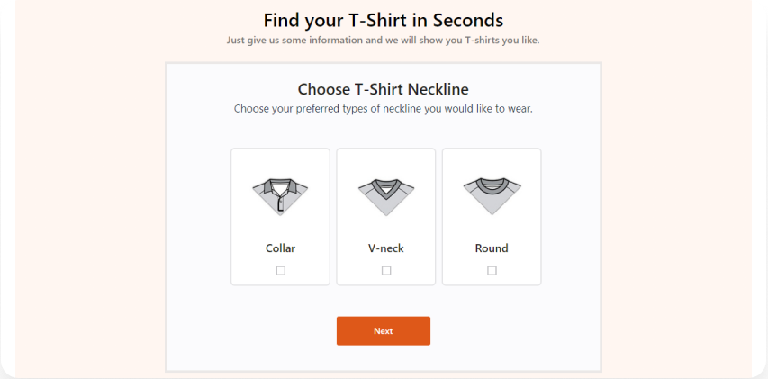

5 Secrets You Must Know About
WordPress Guide Plugin

Mehrin Ferdous
In search of the best WordPress guide plugin or tool, we
built WP Guidant, the ULTIMATE Guided Selling Process
for WordPress.
A guided Selling system is a software-based solution for
online marketplaces that deal with a ton of customer and
product data. Having a simple guided selling process can
boost your sales traffic tremendously by sorting the
mountain of data smartly while improving the supply line
to another level.
Sometimes, having enough hands around your shop doesn’t
help to sell fast. For online shops, the situation
becomes more tense as the number of visitors increases.
However, a reliable WordPress Guide Plugin like WP
Guidant can satisfy the growing number of customers by
serving them quickly on your WordPress site.
But that’s all in words unless you try. So the question
is, what makes WP Guidant so unique for your online
marketplace?
Let’s find out!
Why do you need a guided selling system?
With the change of time, the system around our online
marketplace has changed a lot. Before, there were all
kinds of retail shops here and there, selling products
and doing business.
As we stepped into the world of the World Wide Web, most
of the retail shops converted into
online marketplaces. Now digital shops can be seen
everywhere, while most of them are based on WordPress
software. The WordPress site is fast, easy to access,
and doesn’t need you to step out of your residence.
As people love to get comfortable while shopping, the
majority get along with online shops to avoid crowds.
These virtual shops can hold 100 times more products
than a regular shop could hold.
With the massive shift in the store’s capacity comes a
whole new kind of burden. The WordPress shopping
community has been facing these burdens for a long time
now-
Lack Of Control Over The Products
Before, the retail shop owners could play the cards to
pull visitors to become their customers. But now, the
customer has the drivers’ seat. Any visitor can freely
access online shops to look for their desired product.
In fact, the majority leave empty-handed just because
they didn’t find the right product or your shop failed
to display related products.
In retail shops, the sales reps usually spend a great
deal of time learning about the products to help
customers make the decision quickly. However, in online
shops like a regular shopping WordPress website, the
lack of control for displaying the right product
off-the-shelf or showing WooCommerce recommended
products prove harmful for the sales.
Having Less Time For Selling A Product
Usually, any customer visiting an online shop prefers to
do their shopping in less time possible. The reason
people choose online shops is that the majority are job
holders who tend to be busy to the last minute. So, you
get only a tiny amount of time to catch their attention
to buy your product.
For ease of access, a WordPress website gives you the
ability to display a ton of product categories in your
shop, making it easy for people to choose fast. But that
isn’t enough anymore. Aside from a faster site, people
need a quicker way of finding their desired product.
Lacking a proper product advisor tool or WooCommerce
product guide for displaying WooCommerce related
products can lower the sales volume pretty down.
That’s why you are losing more customers every day due
to the lack of a proper WordPress Guide Plugin to help
them shop faster. Sadly, WordPress didn’t have a
dedicated WooCommerce buying guide to ease this problem.
But now, it has!
Massive Volume of Products That Needs Sorting
Most WooCommerce websites have a ton of products lying
around for sale. Therefore, the shop owner needs a
decent amount of effort to short all these products
according to their respective category. In case the
volume is too high, you can only see disappointments
from the customers.
Because no one wants to go through hundreds of product
pages to find just one product, people will quickly get
bored from all the browsing and switch to another
competitor’s website. This is a problem that only a
decent WooCommerce product buying guide tool could
solve.
Now that you know the problems affecting your sales,
it’s time to step up to find the right solution for this
problem. Then again, what should you do in order to
boost your sales without affecting the clients’
intention? That’s where WP Guidant enters the show.
Wondering how it makes sense? Let’s see-
How WP Guidant Fits The Frame?
For the World of WooCommerce, WP Guidant is a brand new
name. It’s the most powerful WordPress guide plugin for
online shops and marketplaces.
The plugin was built on a concept to help people shop
faster by picking the right products out of the list.
It’s an interactive interface that leaves the users with
a couple of product quiz. By answering them, the users
get to find the detail of the product they wanted in the
result area.
This is comparable to an expert sales representative,
but a virtual one. Instead of actual people, the WP
Guidant plugin AI does the job of showing WooCommerce
recommended products to help customers decide.
So, how does a single plugin changes everything? Here
are five secrets about the best WordPress guide plugin.
1. WP Guidant Makes Guided Selling Process
For the World of WooCommerce, WP Guidant is a brand new
name. It’s the most powerful WordPress guide plugin for
online shops and marketplaces.
As we have already mentioned, a guided selling system
involves a software-based interface that converses with
the customers and recommends products/services they
desire the most.
WP Guidant kind of works with the same theory. It lets
you create a WooCommerce product guide based on the
existing data on your WordPress website. The whole guide
is made with a series of filters. Each filter is set to
process any specific attribute of the current data.
Combined together, the guide can display recommended
products as the result.
Before, customers needed to search for their desired
products within the long list of goods. With this
WordPress guided selling plugin, customers only need to
answer the product quiz to find the right product. All
of it happens in a couple of seconds. This is comparable
to an expert sales representative, but a virtual one.
Instead of actual people, the WP Guidant plugin AI does
the job of showing WooCommerce recommended products to
help customers decide.
So, how does a single plugin changes everything? Here
are five secrets about the best WordPress guide plugin.
2. Smart Filters For Displaying WooCommerce Related Products
The most outstanding feature that makes WP Guidant the
ultimate guided selling process is the intelligent
filters for displaying related products. The plugin can
read the existing data on your WordPress website and
create filters out of them.
When we developed WP Guidant, we didn’t want it to
perform only a particular role but be a box full of
surprises. That’s why the plugin Filters can read-write
data from WooCommerce and others like posts, titles,
tags, meta, pages, ACF, etc. There’s no visible limit to
the data number and amount.
Also, these intelligent filters can produce
instantaneous results no matter how vast the data is. WP
Guidant will display the product with the most priority
based on the filters and related products on the same
page. That leaves the user with everything at hand that
they might be searching for.
3. Card Filter System For Easy Selections

Certainly, people want pictures more than just words in
an online shop. You want to present them with the
WooCommerce related products they were looking for. But,
how do you do that?
That’s possible with the user-integrated card filters of
WP Guidant. The Card filters can display the product
image with a title and description to help the users
choose what they want to see.
For example-
The picture above shows a WooCommerce product guide for
t-shirts. Here, the guide has 3 card filters for three
different product categories. Selecting any filter takes
the users to the next step based on the selected product
card. This is a chain process that connects the
remaining filters to process the product data according
to the selection.
If a user chooses the v-neck tee, then presses “Next”
and selects the price range, the result will show the
optimum v-neck tees within the budget range. This is a
2-step guide for t-shirts.
Check out our
video guide
to create and customize card filters in WP Guidant.
4. Smart Conditional Logic
Conditional logic is one of the top-secret techniques to
boost your sales using a guided selling process. For a
multi-step guide, it becomes necessary to put separate
filters for specific filter elements. To put it simply-
Suppose you have product A and product B on filter 1.
You want to sell product A but want to rent product B.
That requires you to put separate info on the 2nd filter
for the two different choices.
WP Guidant’s innovative Conditional Logic system makes
it possible to create different filters, set logic on
the filter elements, and show results based on that
system. That’s how the users will get to see the
specific filter by selecting their desired product
guide.
5. Displaying Result Based On Attributes
Lastly, WP Guidant can modify the results based on their
attributes. Confused? Well, it’s common for admins to be
unable to customize the product search result on your
WooCommerce website. But it’s only possible using WP
Guidant.
Not only can you select the result attributes like
price, tag, category, but also you can arrange them
differently for other guides. Like the filter
attributes, there’s a lot of choices for selecting the
result attributes. This way, you could display more/less
information about the WooCommerce related products on
the result page as you want.
Want to know more about the detailed steps to build the
perfect guide for yourself? Follow our easy and simple
step-by-step guide building process.
Top-secret Marketing Ingredient
So far, we have learned about the WO Guidant plugin’s
capability as a plugin for WooCommerce. But that’s not
everything it can do.
WP Guidant has a built-in database that collects reports
from completed guided selling processes from the users.
The report contains every detail the user has gone
through, including forms, card filters, slider filters,
etc. As a result, you can build your sales funnel by
combining all the data from the reports.
Conclusion
That’s all the five secrets behind the intelligent
system of the WP Guidant plugin, including an
overwhelming marketing system for WordPress. Once you
power your business with WP Guidant, you can bring
faster mobility to your system and reap sales super
fast.
The more control you have over your products, the more
profit you get. This is the power of WP Guidant, the
ground-breaking guided selling process.
Writen by
Mehrin Ferdous
Mehrin Ferdous is a creative content writer who loves to work on diverse topics. She has a deep interest to work with new marketing strategies and different buyer persona.


Leave a Reply
Your email address will not be published. Required fields are marked *